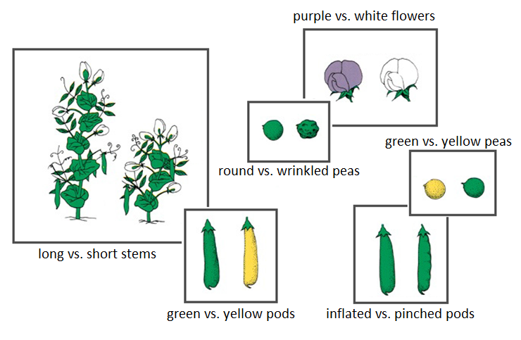
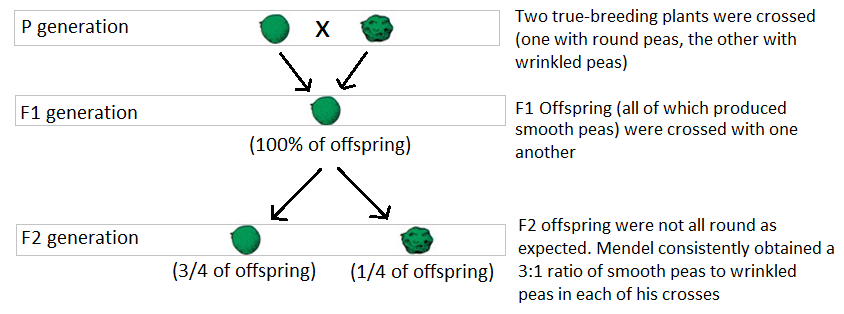
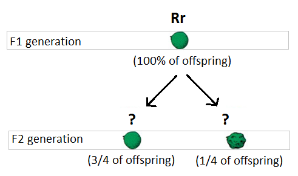
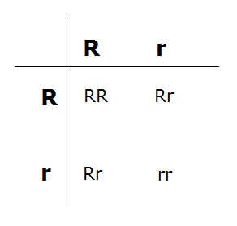
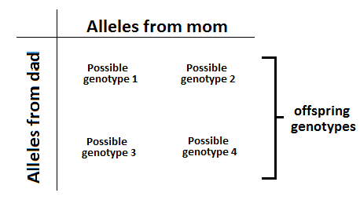
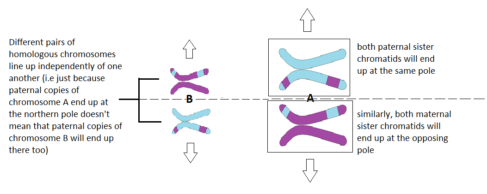

The idea of dominant and recessive alleles was first described by Gregor Mendel…
oHe conducted test crosses with peas of different phenotypes and realized that for each trait, offspring displayed either the maternal or paternal phenotype rather than a blending of the two.
oE.g. a true-breeding (i.e. homozygous) plant with purple flowers crossed with a true-breeding (i.e. homozygous) plant with white flowers always produced offspring with purple flowers, not light purple as previously suggested by the blending theory of inheritance
oThus, he concluded that purple flowers were dominant to white
Mendelian Genetics
Some traits studied by Mendel:
Each trait is controlled by a single gene or set of alleles that, fortunately for Mendel, had a simple dominant-recessive relationship
(as we will see later, this is not always the case which would have really messed things up for him)

Mendel’s crosses yielded some very interesting patterns…
(P = Parental)
(F1 = First filial)
(F2 = Second filial)

How could traits that were not present in the F1 generation re-appear in the F2 generation? And why in such a predictable ratio?
oBecause all of the offspring from the initial cross (F1 gen.) are round, we know that round is dominant to wrinkled.
oParents are “purebred”; thus, the genotype of round parental plants is RR, and that of wrinkled parental plants is rr
Cross: RR x rr
MENDEL’S TEST CROSSES:

Parents are RR (round) and rr (wrinkled), and F1 offspring are all Rr (round):
Now that we know the genotype of F1 individuals, we can use the same process to determine the genotype of F2 individuals…
MENDEL’S TEST CROSSES CONT’D

Recall that the F2 generation are the offspring of a cross between individuals of the F1 generation:
MENDEL’S TEST CROSSES CONT’D

Cross: Rr x Rr
MENDEL’S TEST CROSSES CONT’D


So, as long as we know the genotype of individuals being crossed, we can determine the ratio and potential genotypes of their offspring.
This is done through the use of a
Punnett Square:

Because of the particular way in which chromosomes align during metaphase I of meiosis, each of the four allele combinations is as likely as the other.

Collectively, these ideas are referred to as
The Law of Segregation:
All individuals have two copies of each gene. These copies segregate randomly during gamete formation, and each gamete receives one copy of every gene.
The Law of Segregation forms the basis of modern theories of inheritance.
Furthermore, Mendel observed that …
…when true-breeding parents with contrasting traits are crossed together, only one form of the trait appears in the next generation.
This is called the Law of Dominance.

Altogether, Mendel’s experiments on pea plants allowed him to develop the following three laws. We have addresses the first two so far. The Law of Independent Assortment will be looked at in the next topic.

Law of Independent Assortment
The two alleles for one gene segregate independently of alleles for other genes during gamete formation.
Recall these diagrams from your notes on meiosis II where we discussed how chromosomes line up independently of one another during metaphase I. Take a moment to reflect on how this connects to the Law of Independent Assortment.
